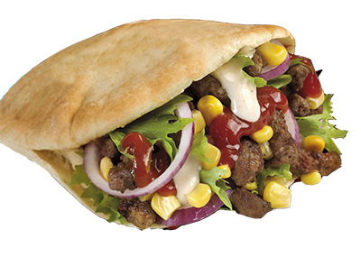

Kebab er en populær fast food rett i Norge. Den har sin opprinnelse i midtøsten. De beste kebabsjappene i Oslo-Bærum er Balkan Kebab, Bislett Kebab House og San Marino.
I kebab er ingredienser som Kjøtt, grønnsaker, pitabrød og saus utrolig viktig.
